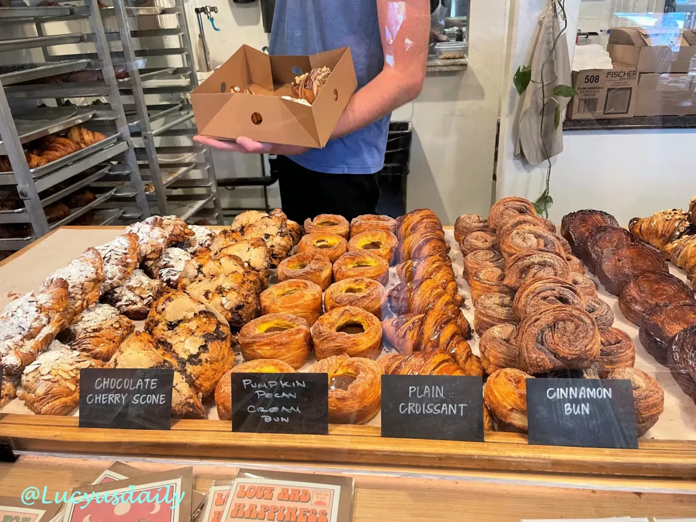
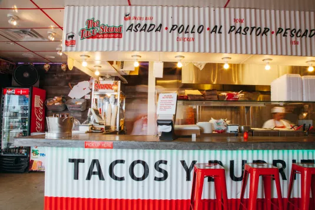
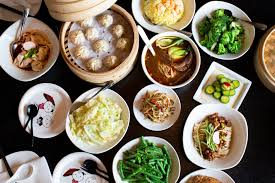

Ambiance: Casual
Cuisine: American Breakfast
Ambiance: Fine Dining
Cuisine: Seafood

Ambiance: More Casual Fine Dining
Cuisine: Italian
There are so many great places to eat in La Jolla! You can explore my favorite places in each neighborhood. I included lots of different foods from different cuisines including Mexican, Chinese, Italian, American, and more.
Here is a link to a Google Earth Folder that shows all of the restaurants listed below!
Google Earth FolderLa Jolla Shores




Ambiance: Casual
Cuisine: Taiwanese Dim Sum